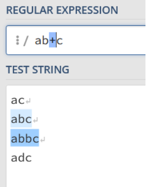
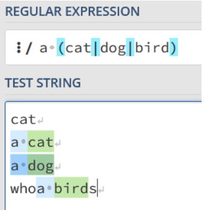
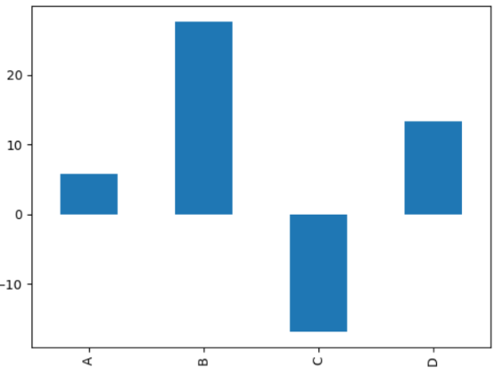
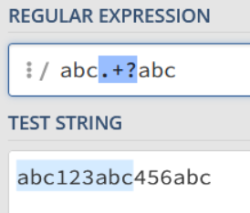

四、数据分析篇（上）
NumPy库、数组与向量化计算
多维数组对象ndarray
ndarray的生成
- 可以使用
np.array()生成。
data1 = [1,2,3,4]
arr1 = np.array(data1)
#>>array([5, 6, 7, 8])
data2 = [[1,2,3,4],[5,6,7,8]]
arr2 = np.array(data2)
#>>array([[1, 2, 3, 4],
# [5, 6, 7, 8]])arr.ndim用于检查数组的维度arr.shape用于表征每一维度的数量arr.dtype用于检查数组中元素的类型（数据中的元素都是同类型的）- 给定长度和形状后，zeros可以一次性创造全0数组，ones可以一次性创造全1数组。
arr_zeros = np.zeros(10)
arr_ones = np.ones((2,3)) #如果需要指定形状，则要传入一个shape元组
arr_ones2 = np.zeros_like(arr2) #创建一个形状和arr2相同的全0数组np.arange是Python内建函数range的数组版
ndarray的数据类型
- dtype 是 NumPy 中用来描述数组中元素类型的对象，表示数据的类型（data type）。当你创建NumPy数组时，dtype决定了数组中每个元素的存储类型，以及它们在内存中的表示方式。
- dtype类型为数据类型 跟一个表示元素位数的数字，例如int32。
- 当需要在内存或硬盘上做深入的存取操作时，才需要了解dtype。
dtype的类型转化
arr.astype()方法（astype方法总会生成一个新的数组）
arr_string = np.array([3.7,-1.2,5.6,4.7],dtype = str)
#在生成数组的时候，用dtype=进行指定（这里书上给的是dtype = np.string，区别在哪里？）
arr_float = arr_string.astype(float)numpy数组算数（向量化）
- 向量化指可以批量对数组进行操作，而不用使用for循环
- 支持加减乘除幂等标量计算
- 同尺寸的数组进行比较，会产生一个布尔值数组
- 不同shape的数组计算：广播特性（略）
numpy索引与切片
- 一维索引较为简单，与前面的基本相似
- 区别于列表切片，数组的切片是原数组的视图，意味着数据并不是被复制了，任何对于视图的修改都会反映到原数组上
arr_or = np.arange(10)
arr_slice = arr_or[5:8]
arr_slice[:] = arr_slice**2
arr_or
#>>array([ 0, 1, 2, 3, 4, 25, 36, 49, 8, 9])
#这里可以看到：对切片的修改影响的原数组！- 切片操作
arr2d = np.array([[1,2,3],
[4,5,6],
[7,8,9]])
arr2d[1,:2] #返回第二行的前两列，是一个一维数组，np.shape() = (2,)
arr2d[1:2,:2]
#返回了一个二维数组, np.shape() = (1,2)布尔索引
names = np.array(['Bob','Joe','Alice','Bob','Will','Joe','Joe'])
names == 'Bob' #生成一个布尔值数组
data[names == 'Bob'] #可以将这个数组作为索引传入，筛选出满足条件的行- 当布尔值数组的长度不正确时，该方法不会报错，因此要小心。
- 用~可以对索引条件取反,用&和|表示且与或，注意不是not,and,or.
condition = name == 'Alice'
data[~condition]- 使用布尔值索引选择数据时，总是生成数据的拷贝,即不改变原数组。（对数组的切片进行赋值时，会改变原数组）
神奇索引
- 在索引中传入的不再是一个整数或者整数范围，而是一个列表或者数组
arr3 = np.arange(32).reshape((8,4))
# array([[ 0, 1, 2, 3],
# [ 4, 5, 6, 7],
# [ 8, 9, 10, 11],
# [12, 13, 14, 15],
# [16, 17, 18, 19],
# [20, 21, 22, 23],
# [24, 25, 26, 27],
# [28, 29, 30, 31]])
arr3[[1,5,7,2],[0,3,1,2]] #神奇索引
# array([ 4, 23, 29, 10])数组转置与换轴
- 二维数组可用
A.T或A.transpose()转置；.T是属性，不带括号。 - 计算矩阵的内积
np.dot()
二维数组 A 与其转置的矩阵乘积是 AA^{\mathsf T}，可写为 A @ A.T 或 np.dot(A, A.T)。
- 对于更高维度的数组，transpose方法可以接收包含轴编号的元组，用于置换轴
arr4 = np.arange(24).reshape((2,3,4))
arr_transpose = arr4.transpose((1,0,2)) #将第一个轴和第二个轴进行置换
arr_transpose.shape # (3, 2, 4)- 转置是换轴的一个特例，换轴还有通用方法
swapaxes()
通用函数：快速逐元素数组函数
通用函数ufunc
一元通用函数
- 一元通用函数只需要一个输入数组。它对每个元素进行操作，并返回一个新的数组。
| 函数 | 作用 |
|---|---|
abs、fabs | 逐元素取绝对值。 |
sqrt | 平方根。 |
square | 平方。 |
exp | 自然指数。 |
log、log10、log2 | 分别取自然对数、常用对数、以 2 为底的对数。 |
log1p | 计算 log(1 + x)。 |
sign | 返回元素的符号。 |
ceil、floor | 分别向上、向下取整。 |
rint | 取最近的整数；正好居中时取偶数。 |
cos、sin、tan | 余弦、正弦和正切。 |
isnan | 返回布尔数组，标记哪些元素为 NaN。 |
二元通用函数
| 函数 | 作用 |
|---|---|
add、subtract、multiply、divide、power | 逐元素加、减、乘、除、乘方。 |
floor_divide | 整除，商向下取整。 |
mod | 取余数。 |
maximum、minimum<br>
最大值、最小值
使用数组进行面向数组编程
where方法
np.where方法是三元表达式的向量化版本
#要求：当cond中为True时，取xarr对应值，反之则取yarr对应值
xarr = np.array([1.1,1.2,1.3,1.4,1.5])
yarr = np.array([2.1,2.2,2.3,2.4,2.5])
cond_arr = np.array([True, False, False, True, False])
result = [(x if c else y) for x, y, c in zip(xarr, yarr, cond_arr)] #用列表推导式去生成
#可以简化为：
np.where(cond_arr, xarr, yarr)- np.where的第二个和第三个参数不一定是数组，也可以是标量，例如：
np.where(arr, 2, -2)
数学和统计方法
| 方法 | 作用 |
|---|---|
sum | 沿指定轴求和；空数组的总和为 0。 |
mean | 算术平均值；空数组的均值为 NaN。 |
std、var | 标准差、方差；可以调整自由度。 |
min、max | 返回最小值、最大值。区别于逐元素比较的 minimum 和 maximum。 |
argmin、argmax | 返回最小值、最大值所在的位置。 |
cumsum | 依次累加各元素，返回每一步的和。 |
cumprod | 依次累乘各元素，返回每一步的积。 |
mean()和sum()默认对整个数组求均值或总和，也可以用axis指定归约的轴。例如，二维数组按axis=0归约会得到每一列的结果。- 布尔数组的
sum()统计真值个数。例如，(arr8 > 9).sum()统计数组中有多少个元素大于 9。 any()检查是否至少有一个真值；all()检查是否全为真值。
sort方法
- 和列表相似，Numpy可以使用sort进行排序
- 可以指定axis
- 举例，如何从一个数组中选出前5%分位数？
large_arr = np.random.randn(1000)
large_arr_sorted = np.sort(large_arr)
large_arr_sorted[int(0.05*len(large_arr))]unique方法，以及其他的集合逻辑
np.unique() 返回的是数组中唯一值排序后形成的数组
- 其他的集合操作，见P115
使用数组进行文件输入与输出
np.save(), np.load()方法np.savez()方法
np.savez('array_archive.npz', a=arr6, b=arr7, c=arr8)
archive = np.load('array_archive.npz') #这里archive是字典形式
archive['a'] #从字典中取出key为a的array- 用
np.savez_compressed()将数据存入已经压缩的文件。
线性代数
略，见书P116
伪随机数生成
#两种生成（0,1）之间正态分布数据的方式
from random import normalvariate
samples = [normalvariate(0,1) for _ in range(N)]
samples_2 = np.random.normal(size = N)- np.random介绍
np.random.seed(42) # 设置种子,以确保结果可重复
random_numbers = np.random.rand(5) # 生成5个在[0, 1)之间的随机数
random_integers = np.random.randint(low=1, high=10, size=5) # 生成5个在[1, 10)之间的随机整数
normal_samples = np.random.randn(5) # 生成5个标准正态分布随机数
normal_samples_with_params = np.random.normal(loc=0, scale=1, size=5) # 指定均值和标准差
choices = np.random.choice(['apple', 'banana', 'cherry'], size=3) # 从水果中随机选择3个
np.random.shuffle(arr) # 原地打乱 arr 的顺序
#其他分布：如poisson分布，二项分布等。rand(n)生成 n 个随机数；randint(b)生成区间[0, b)内的一个随机整数。
一个示例：随机游走
import random
position = 0 #设置初始位置为0
walk = [] #承接每次游走后的position
steps = 1000
for i in range(steps):
step = 1 if random.randint(0,1) else -1 #返回的1和0可以被看做是布尔值
position += step
walk.append(position)
plt.plot(walk)#用numpy去实现
ran = np.random.randint(0, 2, 1000)
steps = np.where(ran >0,1,-1)
walk = np.cumsum(steps)#一次性模拟多个随机游走
nwalks = 5000
nsteps = 1000
draws = np.random.randint(0,2,size=(nwalks,nsteps))
steps = np.where(draws > 0, 1, -1)
walks = steps.cumsum(1)
# 只对实际触及 ±30 的路径求第一次；数组第 0 列对应第一步。
crossed = np.abs(walks) >= 30
hit = crossed.any(axis=1)
first_crossing_step = int(crossed[hit].argmax(axis=1).min() + 1) if hit.any() else NonePandas库
Series对象
- Series是一种一维的数组型对象
- 基本操作
obj2 = pd.Series([1,2,3,4], index=['a','b','c','d'])
#思考一下，下面的结果会返回什么？
obj2[['a','b','c']]
obj2[obj2>2]
obj2**2
'b' in obj2- 可以直接通过一个字典生成Series
obj3 = pd.Series(dict1)- 这个方法也可以指定一个索引列表，用以指定索引排列的顺序，当列表中的键没有出现在数据中时，value会返回NaN，当字典数据的键没有出现在列表中时，它将被排除在外。
- Pandas用isnull notnull检查缺失数据
sdata = {'Shenyang': 3000, 'Beijing': 2000, 'Shanghai': 1000}
obj3 = pd.Series(sdata,index = ['Beijing','Shanghai','Shenzhen'])
#Beijing 2000.0
#Shanghai 1000.0
#Shenzhen NaN
#dtype: float64- Series具有数据对齐的特性，类似于数据库的join
- Series对象自身和索引都具有name属性，这个特性与其他功能集成在一起
obj3.name = 'Preference'
obj3.index.name = 'City'- Series的索引可以通过按位置赋值的方式进行改变
obj3.index = ['BJ', 'SH', 'SZ']DataFrame对象
Dataframe的创建
1. 利用包含等长度列表或数组的字典创建dataframe
2. 利用包含字典的嵌套字典：将字典的键作为列，将内部字典的键作为行索引
data = {'state':['Ohio','Ohio','Ohio','Nevada','Nevada','Nevada'],
'year':[2000,2001,2002,2000,2001,2002],
'pop':[1.5,1.7,3.6,2.4,2.9,3.2]
}
frame = pd.DataFrame(data)
frame = pd.DataFrame(data, index = np.arange(1,7), columns = ['year','state','pop','GDP']) #可以对index和columns做出指定frame[column]对于任意列名均有效（例如增添新列）；而frame.column只对已有的列名生效。
frame['eastern'] = frame.state == 'Ohio'
frame['area'] = pd.Series([2,2,2], index = [1,2,3])
- del方法用于移除之前的列
Index(索引对象)
- pandas的索引对象用于储存轴标签和其他元对象（例如轴名称或标签）
index = frame.index
# Index([1, 2, 3, 4, 5, 6], dtype='int32')- 索引对象不可修改，不变性使得在多种数据结构中分享索引对象更加安全
labels = pd.Index(np.arange(3)) #创建索引对象
obj2 = pd.Series([1.5,-2.5,0], index = labels)- 在实际工作中，用户并不经常创建索引对象，但是一些操作会返回包含索引化的结果，所以理解索引如何工作还是很重要的。
- 索引有集合的性质，但是可重复，常见操作如下：(P135)
基本操作
1. 重建索引（reindex方法）
obj = pd.Series([4.5,7.2,-5.3,3.6],index=['d','c','b','a'])
obj.reindex(['a','b','c','d','e']) #复习的时候可以自己想一下结果- 当有缺失值时，可以指定
fill_value =,也可以指定method='ffill'(向前填充)和'bfill'向后填充
2. 轴向上删除条目（drop方法）
data.drop(['A','C'], axis=1, inplace = True)
#通过指定一个axis，来决定是按行删除还是按列删除
#inplace的默认值为False，当指定inplace为True时，会直接在原dataframe上做出修改3. 索引、选择、过滤（loc、iloc、at方法）
- 对于Series来说：
obj3['a']
obj3[['a','b','c']]
obj3['a':'c'] #注意这个范围左右都是封闭的
obj3[obj3<2]
obj3[index] = 2
## 数字索引还可以使用，但是在今后将不被支持- 对于DataFrame来说:
- 为了更加精确处理pandas的索引，有两个方法被推出了：loc（标签索引）和iloc（整数索引）

#1.一种便利情况，用于选择单列或者列序列
data[['A','C']]
#2.df.loc[val] 选择单行或多行
#3.df.loc[:, val] 选择单列或多列（和1的作用差不多）
#4.df.loc[val1,val2] 同时选择行和列的一部分
#5.df.iloc方法：与loc类似，不过需要传入的是整数索引
#6.df.at/df.iat方法：用于选取单个值4. 算数和数据对齐
- 对对象相加或相减，如果存在索引对不同，则返回的是索引对的并集，用NaN填充缺失值。类似于数据库的自动外连接。
- 如果将两个行或列完全不同的Dataframe相加，结果全部为空。
df1.add(df2,fill_value = 0)5. Dataframe和Series之间的操作
# 第一行的 Series 按列标签对齐，给每一行减去相同的各列值。
series = frame.iloc[0]
frame.sub(series, axis="columns")
# 第一列的 Series 按行标签对齐，给这一行的各列减去同一个值。
series = frame.iloc[:, 0]
frame.sub(series, axis="index")6. 函数应用和映射(apply、map方法)
- numpy的通用函数ufunc对pandas对象也有效
apply()方法：一个dataframe方法，将函数应用到一行或一列的一维数组上（指定一个axis）
func = lambda x: x.max() - x.min()
frame.apply(func, axis = 0) #默认情况，对每一列应用函数
frame.apply(func, axis = 1) #对每一行应用函数
#传递给apply的函数不一定一定返回一个标量值，也可以返回带有多个值的Series
def func2(x):
return pd.Series([x.min(), x.max()], index=['min',])
frame.apply(func2)
#逻辑：返回frame每一列的最大值与最小值map()方法：一个dataframe和series共有方法，逐元素方法
format = lambda x: '%.2f' % x
frame.map(format) #对dataframe使用map方法
frame['b'].map(format) #对Series使用map方法7. 排序和排名
sort_index方法
or_list = list(range(1,4))
np.random.shuffle(or_list) #这里复习一下np.random.shuffle方法，它只能将序列就地打乱，而不返回任何值
frame2 = pd.DataFrame(np.random.normal(0,2,12).reshape(3,4), index = or_list, columns = ['d','c','b','a'])
frame2.sort_index(axis = 1, inplace = True)
frame2.sort_index(axis = 0, inplace = True)
#这里一次只能sort_index一个轴- 通过指定
ascending = False进行降序排序
sort_values方法
- 当对dataframe排序时，可以使用一列或者多列作为排序键，需要传入参数by
frame3 = pd.DataFrame({'b':[4,7,-3,2], 'a':[0,1,0,1]},index = np.arange(1,5))
frame3.sort_values(by = 'b', ascending = False)
frame3.sort_values(by = ['a','b'], ascending = False)rank方法
- 对数据按照大小进行排名
- 如果存在两个数据相同，默认方法
method = average无法打破平级关系，类似的max和min方法也不行。可以通过first(谁先出现，谁靠前)来处理
frame3.rank(axis = 0, ascending = False, method = 'first')8. 处理含有重复标签的轴索引（is_unique属性）
- 重复索引的情况可以出现，但是并不支持这么做
- 通过
obj.index.is_unique检查是否存在重复索引- 注：这里is_unique不是一个方法，而是一个属性
描述性统计概述
相关系数与协方差
本节待补。
唯一值、计数与成员属性
本节待补。
数据载入、存储与文件
pandas显示设置
pd.set_option('display.max_rows', 5) # 设置最大显示行数为5
pd.set_option('display.max_columns', 5) # 设置最大显示列数为5
pd.set_option('display.max_colwidth', 10) # 设置最大列宽为10个字符
pd.set_option('display.float_format', lambda x: '%.2f' % x) # 设置浮点数显示格式为保留两位小数
pd.set_option('display.expand_frame_repr', False) # 不在行数超出限制时换行显示CSV文件读写
读取CSV文件
- CSV意为：Comma-separated Values（用逗号分隔的值）
- 两个方法：
pd.read_table()和pd.read_csv()，他们的区别在于：分隔符不同，table方法使用制表符\t，csv方法使用逗号作为分隔符。
常用参数（6个）
| 参数 | 用途与示例 |
|---|---|
sep | 指定分隔符，例如 ','；也可使用正则表达式。 |
header | 指定哪一行作为列名。未传 names 时默认推断首行为表头；无表头时用 header=None，列名从 0 编号。 |
names | 手动指定列名。要替换文件已有的表头，同时设置 header=0。 |
skiprows | 整数 n 表示跳过开头 n 行；列表表示跳过指定行号（从 0 开始）。 |
index_col | 用列位置或列名指定索引，如 0 或 'A'；传 [0, 1] 可建立两级索引。 |
na_values | 用字符串或列表指定缺失值标记；用字典分别指定各列的标记。 |
# This is a comment
# This is another comment
, Name, Age, City
1, Alice, 30, New York
2, Bob, 25, Los Angeles
3, Charlie, 35, Chicago你希望读取这个CSV文件，并执行以下操作：
- 跳过前两行（注释行）。
- 使用逗号作为分隔符。
- 将第一列（未命名的列）作为索引。
- 将列名手动指定为
['ID', 'Name', 'Age', 'City']。
# 跳过开头两行注释和旧表头，再指定列名
df4 = pd.read_csv('test_3.csv', skiprows = 3, sep = ',', header = None, names= ['ID','Name','Age','City'], index_col = 0)分块读入CSV文件
chunker = pd.read_csv('large.csv',chunksize = 50, encoding = 'gbk')指定 chunksize 或 iterator=True 时，pd.read_csv() 返回 TextFileReader，每次迭代得到一个 DataFrame。
写入csv文件
data.to_csv()方法- 当指定输出路径为
sys.stdout时，结果将会被输出到控制台中
参数选项
| 写入参数 | 作用 |
|---|---|
sep | 指定输出分隔符。 |
na_rep | 指定缺失值的输出文本，默认是空字符串。 |
index | index=False 不写行索引。 |
header | header=False 不写列名。 |
columns | 只写入指定列。 |
特殊情况处理：使用分隔格式
csv.reader模块：<略>- 更复杂的情况：使用
re.split和正则表达式进行处理
JSON数据
- JSON数据已经成为Web浏览器和其他应用通过HTTP请求发送数据的标准格式，非常接近有效的Python代码。
result = {
"students": [
{
"id": 1,
"name": "Alice",
"age": 22,
"courses": ["Mathematics", "Physics"]
},
{
"id": 2,
"name": "Bob",
"age": 23,
"courses": ["Chemistry", "Biology"]
},
{
"id": 3,
"name": "Charlie",
"age": 21,
"courses": ["History", "Literature"]
}
]
}frame_json = pd.DataFrame(result['students'], columns = ['name','age','courses'])
- 用
json.load()和json.dump()实现python对象与json对象的相互转换。
with open('data.json', 'r') as file:
data = json.load(file)
print(data) # 输出: {'name': 'Alice', 'age': 25, 'courses': ['Math', 'Science']}
with open('output.json', 'w') as file:
json.dump(data, file, indent=4)pd.read_json()方法可以自动将JSON数据集按照指定次序转化为Series或DataFrame。反之则用data.to_json
HTML和XML与网络抓取
- Python中可以对HTML和XML进行解析的库：
lxml, Beautifulsoup, html5lib。 - Pandas内建函数：read_html使用lxml和BeautifulSoup自动解析为Dataframe对象
使用lxml.objectify解析XML
本节待补。
xls与xlsx数据
本节待补。
二进制格式数据
本节待补。
Web交互与数据库交互
本节待补。
数据清洗与准备
缺失值
- pandas采用浮点值NaN（Not a number）来表示缺失值，NaN为容易检测到的标识值
- NA（Not Available）
# how 与 thresh 分开使用：有缺失就删除，或要求至少两个非缺失值。
df.dropna(how="any")
df.dropna(thresh=2)
df.fillna(0)
df.ffill(limit=2)
df.bfill(limit=2)
# 对 DataFrame 调用，得到同形状的布尔 DataFrame。
df.isna()
df.notna()fillna()方法可以传入一个字典，用以指定每一列应该填入的内容- 传入一个行/列的平均值进行赋值
data2.fillna({'A':0.05, 'B':0.1, 'C':0.01})
data2_filled = data2.fillna(value = data2.mean(axis = 0))数据转换
删除重复值
data.duplicated()返回布尔 Series，每行一个值。默认keep='first'：首次出现标记为 False，后续重复行标记为 True。data.drop_duplicates()返回的DataFrame，内容是duplicated数组中返回值为False的部分- 这两个方法都是默认保留第一个重复观测值，如果希望保留最后一个，传参
keep = 'last'
使用函数或映射进行数据转换
- 使用
map方法完成映射 - 小例子：在一个城市数据中按照city列的结果添加一列is_capital，表明是否为直辖市
def is_capital(city):
if city in ['Beijing','Shanghai','Chongqing','Tianjin']:
return True
else:
return False
df[is_capital] = df['city'].map(is_capital)
# 更加简便的方法：用匿名函数与三元表达式
capital_list = ['Beijing','Shanghai','Chongqing','Tianjin']
df[is_capital] = df['city'].map(lambda x: True if x in capital_list else False)替代值
replace方法
data.replace(-999, np.nan) #单值替换
data.replace([-999,-1000],np.nan) #多值替换为同一值
data.replace([-999,-1000],[np.nan,0])
data.replace({-999:np.nan, -1000:0}) #不同值替换为不同值（可以传入列表或字典，注意传入顺序）重命名轴索引
- index和columns也有map方法，例如：将行索引（城市名称）改成取前4个字母并大写：
data.index = data.index.map(lambda x: x[:4].upper())rename方法：
data.rename(index=str.title, columns=str.upper) # 在原有的索引基础上进行修改
data.rename(index={'Beiijing':'Beijing'}, columns={'city':'city_name'})离散化与分箱处理
- 将连续值离散化，并分入“箱子”中去
ages = list(np.random.randint(0,100,100))
bins = [-1,18,25,35,65,100]
cats = pd.cut(ages,bins) # 分箱处理pd.cut()返回的是一个Categorical类型的对象，操作如下：
cats.codes # 返回整数编码的数组
cats.categories # 返回分类区间，pd.IntervalIndex对象
cats.value_counts() # 对结果中箱数量的计数- 默认参数
right = True表明左开右闭（切片一般为左闭右开），可以指定right=False进行更改。 - 通过指定
labels = []更改箱名 - 如果传递给箱的不是一个列表，而是一个整数，pandas会自动根据数据计算等长的箱，例如指定bins =4，则将样本均匀地分为4份。
cats2 = pd.cut(ages, 4, precision=2) # precision选项将精度限制在两位qcut方法基于样本的分位数进行分箱操作。
pd.qcut(data,[0,0.1,0.5,0.9,1.])
pd.qcut(data,4) #根据数据将样本分为等量的四份进行分箱- 注：当共同指定bin = int时，qcut和cut方法不同，qcut是等量分箱，cut是等距分箱
检测过滤异常值
- 描述性统计：
data.describe() - 找出data中A列的绝对值大于3的行：
data[np.abs(data['A']) >= 3]- 找出ABCD列任一列绝对值大于3的行
data[(np.abs(data) > 3).any(axis = 1)]- 对数据进行99%Winsor缩尾
置换和随机抽样
- 使用
np.random.permutation()对DataFrame的行进行重新排序：
data = pd.DataFrame(np.arange(20).reshape((5,4)))
sampler = np.random.permutation(5)
data.iloc[sampler] #或者使用data.take(sampler)- 对DataFrame进行随机抽样：
data.sample(n=3) #不放回抽样
data.sample(n=10, replace=True) #放回抽样计算指标/虚拟变量
- 如果DataFrame的一列有k个不同值，则可以衍生一个k列的值为01的矩阵或DataFrame
get_dummies方法
dict_A = {'key':['b','b','a','c','a','b'], 'data1':range(6)}
df = pd.DataFrame(dict_A)
dummies = pd.get_dummies(df['key'], prefix='key')
df_with_dummies = df.join(dummies)

字符串操作
原生字符串（raw string）
- 通过在字符串前面加r，使得反斜杠不会被当做Python的转义字符
- 下面两种路径都是正确的：
- r'C:\xxx'
- 'C:\\xxx'
Python内建字符串处理方法
split()方法
val = 'a,b, guido'
val.split() # 这种方法处理的一个问题在于：字符串中会存在空格（如何处理）
pieces = [x.strip() for x in val.split(',')]join()用指定分隔符连接字符串。拆分和拼接使用同一分隔符且未丢失信息时，可以还原原字符串。
'+'.join(pieces)replace()方法，用一种模式替代另一种模式（可以传入空字符）count()方法，返回字符串出现的次数- 定位子字符串：
in,find()和index()str.find()找不到时返回 -1；str.index()找不到时抛出ValueError。
startswith(), endswith()字面意思，返回布尔值lower()、upper()、title()用于转换大小写。
正则表达式（REGEX）
- 测试网站: regex101.com
正则表达式基础语法
- ？表示前面的字符可出现0次或1次

- \*表示前面的字符可出现0次或多次

- +表示前面的字符要出现1次及以上

- {}可以限定前面字符出现的数量范围

- 重复匹配：例如匹配ab单元重复出现两次以上的模式

- 或表达式

- 字符类

[a-z]匹配 ASCII 小写字母，[A-Z]匹配 ASCII 大写字母，[0-9]匹配 ASCII 数字。.默认匹配换行符以外的任意字符。- 特殊字符类（大写形式取反）：
\d匹配十进制数字；\D匹配非十进制数字。\w匹配字母数字或下划线；\W匹配其余字符。\s匹配空白字符；\S匹配非空白字符。
^和$用于匹配开头和结尾。
捕获组与非捕获组
- 捕获组：会保存匹配的内容，并可以在后续的处理（如替换、分组引用等）中使用它们。通过数字编号（从 1 开始）来引用捕获的内容。
- 非捕获组：只用于分组（例如，用来控制操作符的应用范围），但不会保存匹配的内容，不能通过组号引用这些内容。
import re
text = '132-4567-7890'
pattern1 = r'(\d{3})-(\d{4})-(\d{4})' # 均为捕获组
match1 = re.match(pattern1, text)
print(match.group(1)) #132
print(match.group(2)) #4567
print(match.group(3)) #7890
pattern2 = r'(?:\d{3})-(\d{4})-(\d{4})' # 均为捕获组
match2 = re.match(pattern2, text)
print(match2.group(1)) #4567
print(match2.group(2)) #7890贪婪匹配与懒惰匹配
- 贪婪匹配（Greedy Matching）在满足正则表达式的前提下，自动匹配最长的字符串
- 懒惰匹配~匹配最短的
- 例子1


贪婪匹配
在通配符后添加一个？改为懒惰匹配
前瞻与回顾
- 前瞻（Lookahead）与回顾（Lookbehind）用于检查某个模式在当前位置之前或之后是否满足某个条件（而不会把他们包含在最终的匹配结果中）
| 模式 | 匹配条件 | 写法 |
|---|---|---|
| 正向前瞻 | X 后紧跟 Y | X(?=Y) |
| 负向前瞻 | X 后不紧跟 Y | X(?!Y) |
| 正向回顾 | X 前紧邻 Y | (?<=Y)X |
| 负向回顾 | X 前不紧邻 Y | (?<!Y)X |
正则表达式例题
- 给定文本「请联系
support@company.com获取帮助，或通过admin@company.com提供反馈」，写出提取其中所有邮箱地址的正则表达式。
[a-zA-Z0-9._%+-]+@[a-zA-Z0-9.-]+\.[a-zA-Z]{2,}- 在一个字符串"联系方式：+86 138-0011-0022 和 13800110022"中，匹配出格式为中国大陆手机号码的部分，包括不同的分隔方式（如空格、-、没有分隔符）。
(\+86[\s-]?)?1[3-9][0-9]([\s-]*[0-9]{4}){2}- 匹配一段文本中所有包含中文引号和中文书名号中的内容
“([^“”]*?)”|《([^《》]*?)》- 匹配所有的日期格式，如2023-01-05，20230523，2023.1.5（要求：如果用户在前后使用了不同的连接符，则不进行匹配）
^(?:(?:\d{4}[-./])?(?:\d{1,2})[-./](?:\d{1,2})|(?:\d{1,2})[-./](?:\d{1,2})[-./](?:\d{4}))$re模块
re.match()如果模式匹配成功，它返回一个匹配对象；如果匹配失败，则返回None。- 匹配结果可以通过
result.group()返回。
- 匹配结果可以通过
re.search(pattern,string)扫描整个字符串，找到第一个匹配的地方。- match和search的区别在于：完全匹配与内含模式匹配
pattern = r'1[3-9]\d-\d{4}-\d{4}'
string = '我的电话号码是158-4001-1911'
match = re.match(pattern, string)
print(match) # None：号码不在字符串开头
re.search(pattern, string).group() # '158-4001-1911're.findall(...)，扫描字符串并返回全部匹配的地方（列表形式）
re.finditer() 与findall类似，但是返回的是一个迭代器
re.replace(pattern, replacecontent, string)将符合正则表达式的部分替换成目标内容re.split(...)根据正则表达式分割字符串，并返回一个列表- 例：给定一段英文歌词，尝试生成两个列表，其中一个包含歌词的所有词汇，另一个包含歌词的所有分句
with open ('chorus.txt', 'r', encoding='utf-8') as f:
string = f.read()
pattern_for_word = '[\s,.]+'
pattern_for_piece = '[,.]+'
result_1 = [x.strip() for x in re.split(pattern_for_word, string) if x.strip()]
result_2 = [x.strip() for x in re.split(pattern_for_piece, string) if x.strip()] # 这里if语句的作用是去除可能存在的空字符串（如果字符串为空，则if None）- 一个特殊的方法（正则表达式的Flag）：
re.IGNORECASE使正则表达式不区分大小写
或者这样使用re.findall(pattern, string, flags=re.IGNORECASE)
Pandas 向量化字符串函数
- 基本语法：
data.str.[方法]()
import numpy as np
email_dict = {
'Alice': 'alice@google.com',
'Bob': 'bob@gmail.com',
'Charlie': np.nan, # 使用 np.nan 作为值
'David': 'david@gmail.com',
'Eva': 'eva@firefox.com'
}
data = pd.Series(email_dict)
data.str.contains('gmail') #返回（True， False， NaN）
matches = data.str.match(r'[a-zA-Z0-9._%+-]+@[a-zA-Z0-9.-]+\.[a-zA-Z]{2,}')